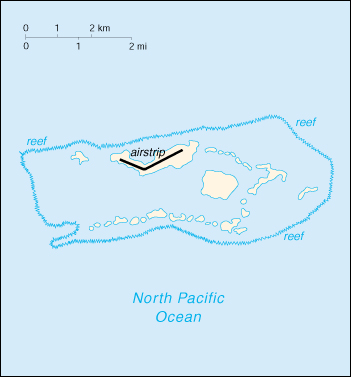

![[Country Flag of Palmyra Atoll]](../flags/lq-lgflag.jpg)
| Palmyra Atoll |
|
       |  | |
| Geography |
Location: Oceania, atoll in the North Pacific Ocean, about one-half of the way from Hawaii to American Samoa
Geographic coordinates: 5 52 N, 162 06 W
Map references: Oceania
Area:
total:
11.9 sq km
land:
11.9 sq km
water:
0 sq km
Area - comparative: about 20 times the size of The Mall in Washington, DC
Land boundaries: 0 km
Coastline: 14.5 km
Maritime claims:
exclusive economic zone:
200 nm
territorial sea:
12 nm
Climate: equatorial, hot, and very rainy
Terrain: very low
Elevation extremes:
lowest point:
Pacific Ocean 0 m
highest point:
unnamed location 2 m
Natural resources: none
Land use:
arable land:
0%
permanent crops:
0%
permanent pastures:
0%
forests and woodland:
100%
other:
0%
Irrigated land: 0 sq km (1993)
Natural hazards: NA
Environment - current issues: NA
Geography - note: about 50 islets covered with dense vegetation, coconut trees, and balsa-like trees up to 30 meters tall
| People |
Population: uninhabited (July 2000 est.)
| Government |
Country name:
conventional long form:
none
conventional short form:
Palmyra Atoll
Data code: LQ
Dependency status: incorporated territory of the US; privately owned, but administered from Washington, DC by the Office of Insular Affairs, US Department of the Interior
Flag description: the flag of the US is used
| Economy |
Economy - overview: no economic activity
| Transportation |
Highways: much of the road and many causeways built during World War II are unserviceable and overgrown
Ports and harbors: West Lagoon
Airports: 1 (1999 est.)
Airports - with unpaved runways:
total:
1
1,524 to 2,437 m:
1 (1999 est.)
| Military |
Military - note: defense is the responsibility of the US
| Transnational Issues |
Disputes - international: none